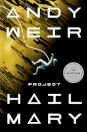

Project Hail Mary

A lot of people really like this, but it really isn't for me. The plot is an eerie recreation of the author's previous (and superior) big hit, The Martian, in which an astronaut finds themselves unexpectedly alone on an ambitious space mission, and has to science the shit out of things (by which we mean deploy some high-school science trivia, along with a penchant for very ordinary mental arithmetic) to save the day.
A badly written, distractingly unconvincing, and ultimately deeply annoying collision between hard science fiction and hand-wavy nonsense, with no literate themes, no higher meanings, no lurking Jungian archetypes - no mythology to it at all. Just a succession of edge-of-the-seat will-he-or-won't-he survive tense moments... Then: Yay, it worked, he did it! But in space!
Not even worth engaging the subjectivity-proof rating system for this one.
Rating: 2/10. I did finish it, but I wish I hadn't.